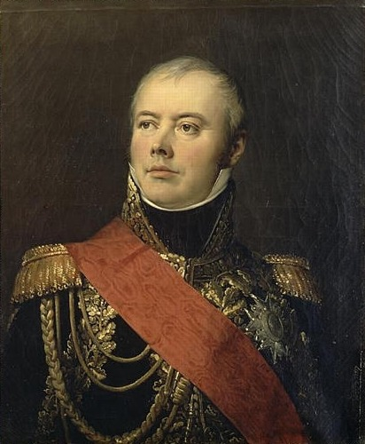

쩌리들의 전쟁 (하편) - 피아베(Piave) 전투
게시: 2017-05-28T23:55:09+09:00
사칠레 전투의 패배를 수습하며 의기소침 해있던 외젠에게 공화국 시절의 낡은 군복을 입고 나타난 장군은 그 군복만큼이나 이름도 독특했습니다. 막도날드(Étienne Jacques Joseph Alexandre MacDonald)라는 이름이었거든요. 스당(Sedan) 출신으로 엄연한 프랑스인인 이 사람이 누가 봐도 스코틀랜드 계통의 이름을 가지게 된 사연은 간단했습니다. 그 가문은 실제로 스코틀랜드 서쪽 섬인 사우쓰 우이스트(South Uist)가 원래 고향으로서, 퇴출된 영국 및 스코틀랜드 연합 왕국의 카톨릭 왕 제임스 2세를 추종하는 집안이었습니다. 박해받는 그런 집안이 같은 카톨릭 국가인 프랑스로 망명한 것은 어떻게 보면 자연스러운 일이었지요.

(막도날드의 초상입니다. 그로 Gros의 작품입니다.)
그가 굳이 공화국 시절의 군복을 입고 나타난 것에도 그의 가문 내역처럼 사연이 있었습니다. 막도날드는 원래 뒤무리에(Charles François Dumouriez) 및 피슈그뤼(Jean-Charles Pichegru) 장군 밑에서 복무한 군인이었습니다. 아시다시피 뒤무리에는 도중에 오스트리아 측으로 망명했고, 피슈그뤼는 반혁명 활동을 펼치다 투옥되어 암살된 사람입니다. 나폴레옹과는 줄을 댈 기회가 없었지요. 그러다 마침내 나폴레옹과 연을 맺을 기회가 왔습니다. 1797년 이탈리아 방면군으로 배속된 것입니다. 그러나 이때는 이미 나폴레옹이 그 지역을 싹쓸이하여 오스트리아와 캄포 포르미오 조약을 맺은 뒤 파리로 돌아간 뒤였습니다. 그 때문에 그는 로마 점령이나 나폴리 왕국 점령 등 뒤치닥거리스러운 임무만을 수행해야 했습니다.
그의 군 경력에서 결정적인 기회가 또 온 것은 1799년의 일이었습니다. 나폴레옹이 이집트 원정으로 자리를 비운 사이, 러시아의 명장 수보로프가 이끄는 러시아-오스트리아 연합군이 북부 이탈리아를 침공한 것입니다. 중부 이탈리아에 주둔하고 있던 막도날드는 3만6천의 병력을 이끌고 불과 2만2천의 병력을 가진 수보로프를 향해 자신만만하게 북진했으나, 트레비아(Trebbia) 전투에서 처참하게 패배하고 맙니다. 그나마 다행이었던 것은 주베르(Barthélemy Catherine Joubert)나 마세나 같은 명장들도 이때 러시아-오스트리아 연합군에게 연전연패하는 바람에 이 패배의 치욕이 좀 희석되었다는 점이었지요. 아무튼 막도날드는 1797년부터 1800년까지 계속 이탈리아 방면군에서 경력을 쌓았고, 나름 이탈리아 전문가가 되어 있었습니다.
문제는 그가 모로(Jean Victor Marie Moreau)와 친하게 지냈다는 점입니다. 나폴레옹의 최대 정적이었던 모로가 투옥된 뒤 1804년 미국으로 망명길을 떠난 뒤, 막도날드도 모로파로 몰려 아무런 지휘권은 커녕 공직조차 맡지 못했습니다. 덕분에 그가 가진 군복은 1804년 이전, 즉 나폴레옹이 황위에 오르기 이전의 공화국 시절의 낡은 군복 뿐이었던 것입니다.
1809년, 나폴레옹은 오스트리아가 전쟁을 일으켰다는 소식을 듣고 외젠에게 '전쟁 발발시 일단 피아베 강 서쪽으로 후퇴하라'는 편지 외에도 쓸만한 야전 지휘관을 보내주었습니다. 아무래도 조세핀의 아들이라는 것 외에는 특출날 것이 없었던 약관의 외젠을 믿을 수 없었으니까요. 그러나 이미 쓸만한 야전 지휘관은 다 자신의 그랑 다르메에서 한자리씩을 하고 있었으므로 따로 보낼 사람이 없었습니다. 이때 발탁된 것이 실업자로 있던 막도날드였습니다. 막도날드는 어쨌거나 방면군 하나를 통째로 지휘해본 경험이 있는 고위 장교였고, 또 마침 이탈리아 방면의 전문가였던 것입니다. 따지고 보면 나폴레옹이 꺼려했던 것은 모로였지 막도날드 따위가 아니었고, 또 이제 황제 5년차로서 더 이상 그와 정치적인 라이벌은 존재하지 않았으니 기피 인물이었다는 점은 더 이상 문제가 되지 않았습니다.
확실히 막도날드의 참여는 외젠의 이탈리아군의 사기를 높여주는 효과를 냈습니다. 외젠은 휘하에 있는 3개 군단 중 가장 강력한 군단을 막도날드에게 맡겼는데, 막도날드는 그의 트레이드 마크인 근면성실을 바탕으로 한 지휘력으로 군단 편성과 병사들 사기 진작에 솜씨를 발휘했습니다. 사실 그렇지 않아도 외젠의 이탈리아군은 사기가 계속 오르고 있었습니다. 요한 대공의 오스트리아군이 전면적인 퇴각 중이었거든요. 요한 대공은 어차피 병력도 부족한 마당에 본국으로부터 '이탈리아 따위가 문제가 아니다, 본진이 털리고 있으니 빨리 돌아와 네 형을 도우라'는 급보를 받고 열심히 퇴각 중이었습니다. 그 뒤를 쫓는 외젠도 마냥 여유만만하지는 않았습니다. 이제 그의 임무는 이탈리아 왕국 방어가 아니라, 카알 대공의 오스트리아군 본진과 합류하려는 요한 대공을 요격하여 어떻게든 그쪽에 합류하지 못하도록 해야 했던 것이지요. 요한에게나 외젠에게나 성패의 제1 요건은 결국 스피드였습니다.
도둑과 경찰이 추격전을 벌일 때는 도망치는 쪽이 유리한 경우가 많습니다만, 수만 명의 병력으로 이루어진 군대끼리 추격전을 벌일 때는 대부분 도망치는 쪽보다 추격하는 쪽이 유리합니다. 군대가 진격할 때는 문제가 안 되지만 후퇴할 때는 이런저런 문제들이 많이 생기므로, 도망치는 쪽의 발걸음이 더 느린 경우가 많거든요. 가령 부상병들의 처리같은 경우만 해도 그렇습니다. 진격할 때는 그냥 부상병을 후방에 버려두고 가도 큰 문제가 되지 않지만, 후퇴할 때는 부상병을 두고 간다는 것은 곧장 포로가 된다는 것이었고, 그렇다고 데려가자니 행군 속도가 느려질 수 밖에 없었지요. 결정적으로, 강과 같은 장애물을 건너느라 지체할 수 밖에 없을 때, 뒷덜미를 잡히기 딱 좋았습니다.
막 후퇴가 시작된 4월말, 가장 먼저 만난 큰 강인 아디제(Adige) 강가에서 당장 이런 일이 벌어졌습니다. 그러나 이렇게 벌어진 칼디에로(Caldiero) 전투에서, 오스트리아군 후위대는 이탈리아군 선발대를 효과적으로 뿌리치고 도강에 성공합니다. 하지만 결국 요한 대공은 피아베(Piave) 강 근처에서 다시 따라잡히고 맙니다. 5월 8일의 일이었습니다.
원래 나폴레옹이 이 선까지 후퇴하라고 지시했던 피아베 강에 도착했을 때, 이미 오스트리아군은 강을 건넌 뒤 다리를 다 태워버린 뒤였습니다. 그러나 현지 지리에 밝은 쪽은 당연히 이탈리아군 쪽이었습니다. 외젠은 다리 없이도 걸어서 건널 수 있는 여울목을 여러 곳 파악하고 있었습니다. 외젠은 오스트리아군 본진은 이미 꽤 멀리까지 도망쳤고 강 건너에 있는 오스트리아군은 소수의 후위대라고 생각했습니다. 다만 칼디에로 전투에서 지나치게 서두르다 오스트리아군을 놓친 바 있던 외젠은 이번에는 병력을 다 모은 뒤 대규모로 강을 건너기로 했습니다. 이 결정이 외젠을 승리자로 만들어 줍니다.
외젠이 파악한 것과는 달리, 실제로는 요한 대공의 본진도 강가에서 불과 4km 떨어진 곳에 있었습니다. 요한 대공 입장에서도 이렇게 아슬아슬하게 쫓기며 빈까지 갈 수는 없다고 보고, 이 곳에서 외젠에게 크게 한방 먹이고 가겠다는 계획이었거든요. 오스트리아군은 약 2만8천, 이탈리아군은 약 4만4천으로 외젠의 이탈리아군이 압도적으로 유리했습니다만, 변수가 있었습니다. 바로 피아베 강이었지요.
외젠의 계획은 먼저 드세 백작(Comte Dessaix, Joseph Marie, 마렝고의 드제 Desaix와는 아무 상관없습니다)이 이끄는 강력한 전위대가 여울목을 건너 교두보 확보에 성공하면, 막도날드의 군단부터 시작해서 병력을 투입할 생각이었습니다. 동시에 다른 여울목을 통해서 기병 사단들을 그루시(Emmanuel de Grouchy, 훗날 워털루의 그루시 맞습니다) 지휘 하에 투입할 예정이었습니다. 이 외에도 위치를 파악해둔 다른 여러 여울목을 통해서도 다른 군단들도 투입할 계획이었습니다.
그러나 아침 7시부터 드세 휘하의 전위대 5천이 거센 물살을 헤치고 어렵게 강을 건너자마자, 오스트리아 기병대가 군도를 휘두르며 그들을 반겼습니다. 드세는 당황하지 않고 교과서적으로 대응했습니다. 전위대를 2개의 커다란 방진(square)로 만들어 적 기병에 대항했지요. 그러나 오스트리아군도 결코 아마추어가 아니었습니다. 이탈리아 보병들이 방진을 만들자, 정말 교과서처럼 오스트리아군에서는 포병대가 나섰습니다.
당시 병종간의 천적 관계는 대충 이랬습니다. 보병끼리 싸울 때는 넓게 횡대로 펼쳐진 진형이 좋았습니다. 소총의 일제 투사력을 극대화할 수 있었고, 또 적 포격으로부터의 피해를 최소화할 수 있었거든요. 그러나 이렇게 펼쳐진 횡대는 군도를 뽑아든 기병들의 돌격에 완전 취약했습니다. 기병들의 공격에 대항하기 위해서는 보병들은 3열 또는 4열로 밀집하여 직사각형의 방진을 만들어야 했습니다. 말은 빽뺵히 늘어선 총검 대오를 결코 뚫을 수 없었거든요. 그러나 이런 보병 밀집 방진은 또 포병이 가장 좋아하는 먹이감이었습니다. 대포알 한방에 6~7명이 한꺼번에 나가 떨어지니까요.
이렇게 오스트리아 기병대가 이탈리아 보병들을 위협하여 방진을 만들자마자 오스트리아 포병대가 나선 것은 정말 기가 막힌 기-포병의 콜라보레이션이었지요. 밀집된 이탈리아 보병들은 곧 불을 뿜은 오스트리아 대포에 나가 떨어지기 시작했습니다. 드세는 이번에는 당황하여 외젠에게 도움을 요청할 수 밖에 없었습니다. 이에 대해 외젠은 도강 순서를 급히 변경하여 포병대를 급파, 드세의 전위대를 지원했습니다. 전투는 곧 포병끼리의 치열한 포격전으로 전개되었고, 드세는 한숨 돌릴 수 있었습니다.
그러나 드세의 안도도 잠시였습니다. 이탈리아군 포병들은 너무 급히 여울목을 건너느라 탄약을 별로 못 가져왔던 것입니다. 결국 포탄이 떨어진 포대들은 하나둘씩 슬그머니 철수하기 시작했습니다. 위기의 순간, 다른 여울목을 통해 강을 건넌 이탈리아 기병대가 오스트리아 포병대를 덮쳤습니다. 이에 맞서 오스트리아 기병대들도 다시 일제히 뛰어나왔고, 곧 혼전이 벌어졌습니다. 결과는 이탈리아 기병대의 완승이었습니다. 오스트리아 기병들은 그 지휘관까지 전사해버렸고, 전체 24문의 대포 중 14문이 이탈리아군 손에 넘어갔습니다.
이러는 사이 막도날드의 군단이 꾸준히 강을 건넜습니다. 다만 나폴레옹의 도나우 강 부교를 끊어 놓은 것이 궁극적으로는 평년보다 일찍 시작된 검은 숲의 눈 녹은 물에 의한 수위 증가였듯이, 여기서도 비슷한 일이 벌어지고 있었습니다. 피아베 강은 이날 하루 중 꾸준히 유속과 수위가 계속 늘어나고 있었는데, 이 때문에 여울목을 통해 강을 건너다 물살에 떠내려가 결국 익사하는 병사들이 계속 늘어났습니다. 오후 3시 경이 되자 물살이 너무 거세져, 결국 외젠은 여울목을 통한 도강을 중단시킬 수 밖에 없었습니다.
그러나 상관없었습니다. 이미 정오 무렵, 막도날드는 휘하 군단 병력의 약 3/4 정도를 건너게 한 뒤였거든요. 요한 대공은 애초의 계획과는 달리 이탈리아군의 공격이 거세게 나오자 당황했는지 휘하 병력을 시원시원하게 투입하지 않고 머뭇거리는 사이, 막도날드는 포병들의 맹렬한 포격을 시작으로 정석적인 공격을 시작했습니다. 오스트리아군도 뒤늦게나마 예비대인 정예 척탄병 여단을 투입하며 반격했으나 이미 전세는 이탈리아군 측으로 완전히 기운 뒤였습니다. 전체적인 전투는 저녁까지 이어졌으나, 오후 1시 경에 이미 전투의 절정은 지난 상태가 되었고, 오스트리아군은 그나마 진형을 유지한 채 전장을 빠져나가기 시작했습니다.
결국 이 전투에서 오스트리아군은 약 14%의 사상률인 약 1200의 사상자와 약 2700의 포로 및 행방불명자를 내며 대패했으나, 완전한 패주로 이어지지는 않았습니다. 어떻게 보면 외젠의 패기에 질린 요한이 초심과는 달리 소극적인 공세를 펼쳤던 덕분에 패배 이후에도 나름 수습을 잘 할 수 있었던 것이지요. 이후로는 요한 대공은 감히 외젠의 추격에 반격할 엄두를 내지 못하고 계속 후퇴만 했는데, 무슨 생각에서인지 사칠레에 이르러서는 휘하 2개 군단을 둘로 나누어 원래의 각각의 근거지로 되돌려 보냅니다. 즉, 제9 군단은 원래 카르니올라(Carniola, 현재의 슬로베니아)의 류블랴나에서 출발했었고, 제8 군단은 오스트리아 카린티아(Carinthia) 지방의 주도인 빌라흐(Villach)에서 편성된 부대였는데, 이들을 각각 류블랴나와 빌라흐로 나누어 보낸 것입니다.
어쩌면 요한은 류블랴나를 지킬 병력도 있어야 한다는 생각에서 제9 군단을 그쪽으로 보낸 것인지 모르겠으나, 덕분에 그 뒤를 추격하는 외젠은 분산된 오스트리아군의 저항을 분쇄하며 아주 쉽게 오스트리아 국경을 넘어 나폴레옹 쪽으로 합류할 수 있었습니다. 결국 요한과 외젠은 소규모의 전투를 계속 벌이며 앞서거니 뒷서거니 북진하여 결국 카알 대공과 나폴레옹에게 합류할 수 있었습니다. 그러나 정작 바그람 전투에서 이탈리아군은 막도날드의 지휘 하에 결정적인 공을 세우게 되고, 요한 대공의 병력은 결정적인 순간에 하는 일이 없었습니다. 그 이야기는 바그람 전투 시리즈에서 보시겠습니다.
Source : With Napoleon's Guns by Colonel Jean-Nicolas-Auguste Noel
https://en.wikipedia.org/wiki/Battle_of_Caldiero_(1809)
https://en.wikipedia.org/wiki/Jacques_MacDonald
https://en.wikipedia.org/wiki/Battle_of_Trebbia_(1799)
https://en.wikipedia.org/wiki/Battle_of_Piave_River_(1809)